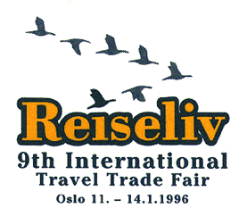

![[Oslonett Home]](/gifs/on/home.gif)

Type of fair: Trade and public fair
Dates: 11. - 14. January 1996
Trade days - all day Thursday 11th as well as
Friday 12th January until 1400 hours.
Place of event: Sjølyst Exhibition Centre, Oslo - Norway
Visiting groups: Tour organizers
Travel agencies
Transportation companies
Accomodation
Travel associations
Travel secretaries/travel managers
Special interests groups
Holiday/leisure market (the public)
Media
MIC buyers (Meetings, Incentive, Conference)
Entrance fee: NOK 60,- Public (in the weekend)
NOK 30,- Children under 14 years and pensioners
Organizers: Reiseliv is organized by the Norwegian Trade Fair
Foundation in collaboration with The Norwegian Tourist
Board (NORTRA).
The following organizations are represented in the supportng committees of Reiseliv '96:
NORTRA ANTOR The Norwegian Travel Trade Association (DNR) Association of Lodging and Food Establishment (FOS) Norwegian Automobile Association (NAF) Norwegian Hotels and Restaurants Association (NHRF) Oslo Promotion Federation of Norwegian Transport Enterprises National Airline Coordinating Group for Braathens SAFESAS and Widerøe PATA Norwegian Tour Operators and Norwegian Travel Journalists
Reiseliv is a member, and act according to the rules of European Travel Tourism Fairs Association (ETTFA) and Scandinavian Fair Control (SFC).
Team Reiseliv '96:
Exhibition Manager: Finn Kolderup
Information Officer: Dan-Erik B. Dyrud
Technical Consultant: Jon Sandbekk
Consultant: Mona-M. Nortind
Project Secretary: Katrin Andersen
Updated, August 7., 1995, webmaster@oslonett.no